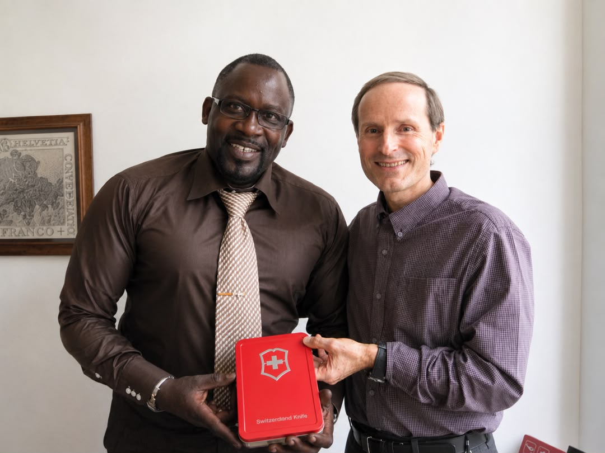

La rencontre
Aux côtés de la famille fondatrice.
Cette photo réunit Karl Estner, héritier de la famille fondatrice de Victorinox, et M. Ababacar Ngom, représentant de la marque Victorinox au Sénégal.
Elle symbolise notre engagement à offrir des produits authentiques, reconnus dans le monde entier pour leur qualité, leur fiabilité et leur savoir-faire suisse.